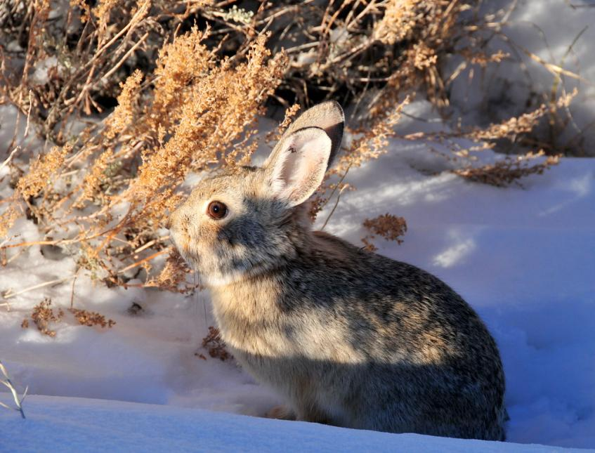

Save the Pygmy rabbit!
Pygmy Rabbit by Washington Department of Fish and Wildlife
Pygmy Rabbits are marked as endangered by the Washington Department of fish and wildlife. These adorable creatures are at risk of extinction due to the destruction of their natural habitat.